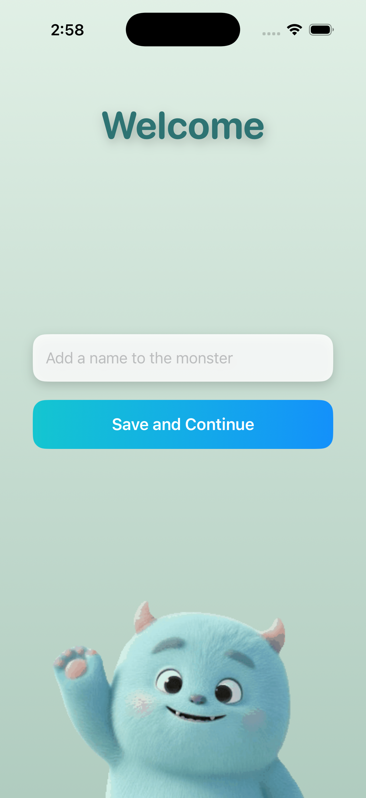
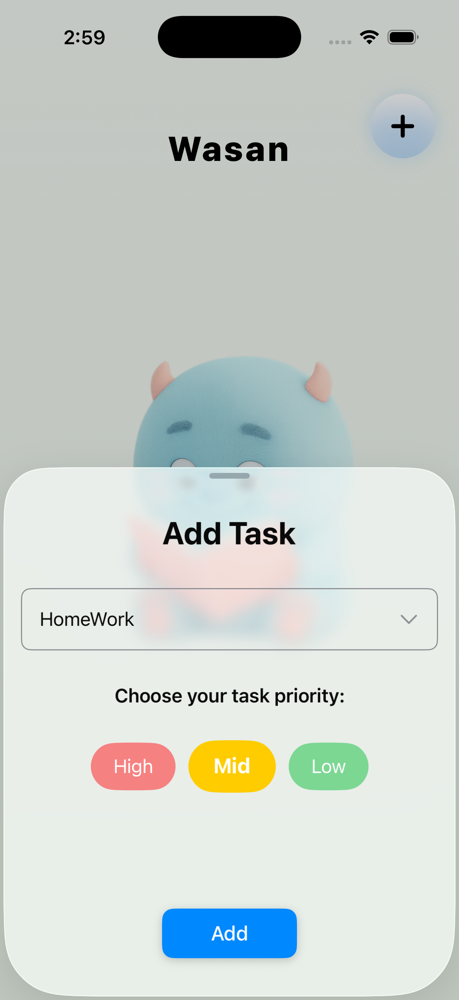
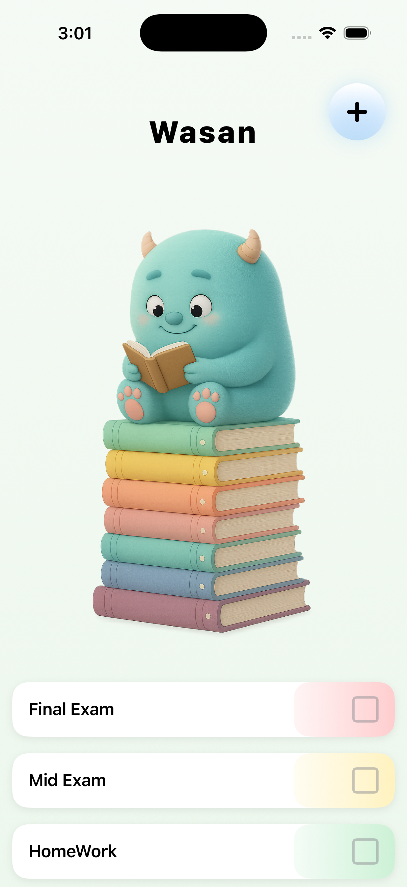

IOS APP
Task Monster
Task Monster is a gamified productivity app where users create daily tasks, organize them by priority, and watch their monster grow by collecting books as they complete more goals.
IOS APP
Task Monster is a gamified productivity app where users create daily tasks, organize them by priority, and watch their monster grow by collecting books as they complete more goals.
APP OVERVIEW
Completing tasks rewards the player by growing a stack of books, making productivity fun and motivating.
Every task can be categorized as High, Medium, or Low priority for better planning.
The monster visually progresses as users finish more tasks, encouraging consistency through gamification.
GALLERY


